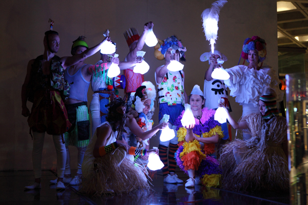
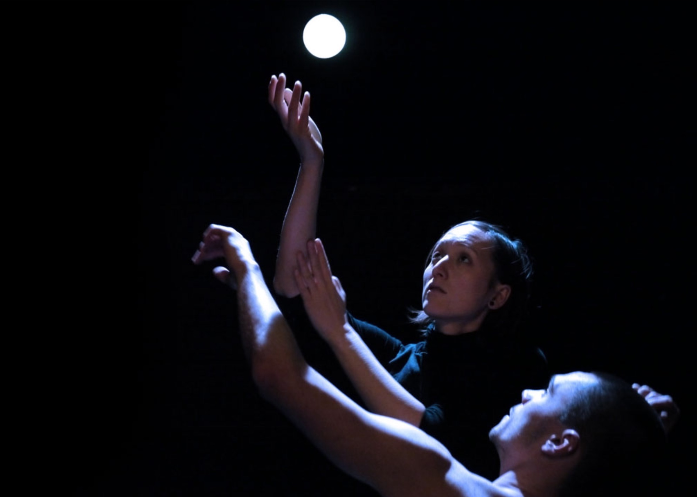

I am part of the cast of the show "4x4 Ephemeral Architectures" by Gandini Juggling, which is a collaboration between two worlds: ballet and juggling.
Find out more at
Gandini Juggling.
I am part of the cast of the show "4x4 Ephemeral Architectures" by Gandini Juggling, which is a collaboration between two worlds: ballet and juggling.
Find out more at
Gandini Juggling.
Kim Huynh
Jonglage - Danse
I am part of the cast of the show "4x4 Ephemeral Architectures" by Gandini Juggling, which is a collaboration between two worlds: ballet and juggling.
Find out more at
Gandini Juggling.
 "Smashed": A show inspired by the work of Pina Bausch. I am part of the cast.
Find out more at
Gandini Juggling.
"Smashed": A show inspired by the work of Pina Bausch. I am part of the cast.
Find out more at
Gandini Juggling.
Smashed - Gandini Juggling
 In 2009 I founded the company
Cie Sens Dessus Dessous
with Jive Faury and since work with him on choreographical juggling.
"Linéa" was our first creation - a show for two dancing jugglers and 100m of rope.
Find out more
in this Exposé.
In 2009 I founded the company
Cie Sens Dessus Dessous
with Jive Faury and since work with him on choreographical juggling.
"Linéa" was our first creation - a show for two dancing jugglers and 100m of rope.
Find out more
in this Exposé.
Linéa - Cie Sens Dessus Dessous

I was part of the cast of the show "Blotched" by
Gandini Juggling
in 2011.
Blotched - Gandini Juggling
 In March 2005, I joined the Company JéromeThomas for the creation of
Rain/Bow that has been performed more than 100 times between 2006 and 2008 in France and abroad.
In March 2005, I joined the Company JéromeThomas for the creation of
Rain/Bow that has been performed more than 100 times between 2006 and 2008 in France and abroad.
Rain/Bow - Cie Jérôme Thomas
 I’m part of the collective “Bicubic”, that mixes juggling,
object manipulation and numeric arts. The resulting show,
also called Bicubic, was performed at the festival Jonglissimo
in Reims in 2008.
I’m part of the collective “Bicubic”, that mixes juggling,
object manipulation and numeric arts. The resulting show,
also called Bicubic, was performed at the festival Jonglissimo
in Reims in 2008.
Bicubic

In March 2010 I joined the company 14:20 ,
and interpreted the pieces “étoiles”, "Vibrations" and
“Notte”. Find out more about "Notte" in this PDF (french).